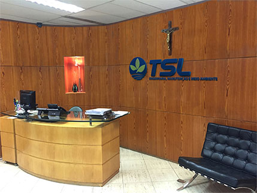
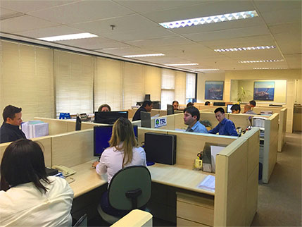

Institucional
Conheça sobre Institucional

A TSL iniciou suas atividades em 1984 atuando nas áreas de manutenção complementar e utilidades.
Em 1991 passou a operar em plataformas de petróleo, estabelecendo sua base de operação em Macaé-RJ., onde atualmente estão concentradas suas principais atividades.
Em 1997 a TSL incorporou a área de preservação ambiental através de Joint-venture com empresas americanas e passou a desenvolver tecnologias próprias.
A TSL iniciou suas atividades em 1984 atuando nas áreas de manutenção complementar e utilidades.
Em 1991 passou a operar em plataformas de petróleo, estabelecendo sua base de operação em Macaé-RJ., onde atualmente estão concentradas suas principais atividades.
Em 1997 a TSL incorporou a área de preservação ambiental através de Joint-venture com empresas americanas e passou a desenvolver tecnologias próprias.

Missao
-
Colocar à disposição dos clientes as alternativas mais adequadas às suas necessidades;
-
Utilizar as tecnologias mais avançadas existentes no mercado;
-
Buscar a excelência em todas as áreas de atuação;
-
Compromisso total e irrestrito com a preservação do meio ambiente.
Visao
-
Referência tecnológica na área de tratamento de resíduos;
-
Liderança nacional de mercado no tratamento de resíduos perigosos;
-
Empresa com atuação global.
Valores
-
Ética Empresarial;
-
Valorização do conhecimento técnico;
-
Comprometimento na execução dos serviços;
-
Comprometimento com segurança e o meio ambiente;
-
Cumprimento dos compromissos assumidos;
-
Compromisso com o bem estar dos funcionários.
Diretrizes
- Comprometimento de todos os funcionários com as expectativas, objetivos e plena satisfação dos clientes;
-
Planejamento e gerenciamento cuidadosos de logística e operação;
-
Garantia total da qualidade no fornecimento de serviços e equipamentos;
-
Praticar a segurança como pré-requisito na execução de todas as atividades operacionais;
-
Zelar pela integridade física do patrimônio dos clientes e da empresa;
-
Treinamento e qualificação constantes dos funcionários;
-
Busca da tecnologia necessária, onde disponível;
-
Pesquisa e desenvolvimento de novas tecnologias quando as existentes no mercado não atenderem as necessidades dos clientes e/ou requisitos ambientais;
-
Manter relacionamento com Universidades e Centros de Pesquisa no mundo;
-
Colaborar no desenvolvimento da legislação ambiental;
-
Preservação ambiental como foco dos nossos negócios.
Governanca
A TSL atua sob um Sistema de Gestão Integrada (SGI) e tem seus processos estabelecidos de acordo com uma Política de Gestão Integrada, na qual está demonstrado seu compromisso com a qualidade dos serviços prestados, a preservação do meio ambiente e a proteção de todos seus colaboradores.
Clique aqui para conhecer a Política de Gestão Integrada da TSL.
O Código de Ética da TSL estabelece os princípios adotados pela empresa internamente, bem como em suas relações com terceiros.
Apresenta também o comportamento ético esperado de cada colaborador, próprio ou terceirizado, no desempenho de suas atividades na TSL, visando manter o padrão de qualidade dos seus serviços, contribuindo assim para preservar a imagem da empresa e manter elevado o conceito que a TSL tem merecido de seus clientes, por sua atuação.
Clique aqui para acessar o Código de Ética da TSL
A TSL possui também um Programa de Integridade em consonância com a Lei nº 12.846/2013 e suas regulamentações, conhecida como Lei Anticorrupção ou Lei da Empresa Limpa que instituiu no Brasil a responsabilização objetiva administrativa e civil das pessoas jurídicas.
Clique aqui para acessar o Canal de Denúncia.